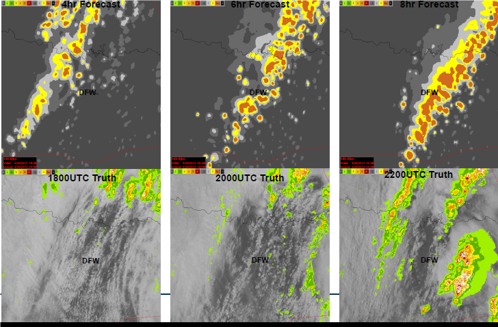

Student Grand Challenge
Grand Challenge Background 
As Air traffic operations expand both in the U.S. National Airspace System (NAS) and the so-called Single European Sky (SES), advanced techniques for managing aircraft 4D trajectories will be increasingly utilized, particularly in high density airspace such as large US metroplexes or big European hubs. The cornerstone to both the FAA’s NextGen and the SES ATM Research (SESAR) initiative is the transition of today’s air traffic control services to trajectory based operations (TBO). TBO concept envisions the integration of today’s domain-specific air traffic management (ATM) tools with advanced functions already available in most commercial transport aircraft today into “gate-to-gate” decision-support capabilities with the goal of maximizing efficiency over the entire flight-planning, operation and turn-around cycle, wherein cost functions become increasingly multivariate. TBO will leverage on improvements in navigation accuracy, communications, surveillance, and automation to minimize aircraft position uncertainty in all four dimensions. These improvements rely on a system wide information sharing (called SWIM in Europe) with all authorized users, resulting in consistent information across all systems and actors. Better information and seamless information access based on standard information exchange models will provide users and operators in tomorrow’s airspace with common awareness, a more accurate view of the entire system, and improved decision making tools to increase system capacity and safety, improve flight efficiency, and provide users with enhanced operational flexibility.
However, resiliency and robustness of these tools during off-nominal conditions, in particular convective weather, is still a major research issue. Forecasts of the timing, location, intensity and duration of significant weather such as thunderstorm or heavy snow fall impacts on ATM resources over the day of operation required for gate-to-gate planning contain obvious uncertainty, and current ATM functions are not structured to deal with this uncertainty, reliably. New techniques for weather observation and forecasting are needed, particularly in the “planetary boundary layer (PBL)” where convective initiation occurs, and effective methods for coupling these observations to high-resolution weather forecasting models must be developed. The resulting enhanced forecasts of adverse weather must be integrated into both “traditional” ATM services and new ATM processes required to accommodate emerging, highly automated ATM entrants such as Unmanned Aircraft Systems (UAS).
Grand Challenge Problem Description
To facilitate the advancement of the grand challenge described above, student teams shall develop, analyze and test low-altitude airspace management concepts necessary to enable small Unmanned Aircraft Systems (sUAS) to routinely and autonomously perform in situ observations of pressure, temperature, moisture and winds well into the planetary boundary layer (0-1500 m AGL). A network of sUAS observing systems would be deployed so as to capture important atmospheric structures (frontal surfaces, outflow boundaries, temperature inversions) in operationally relevant airspace, with the very high spatial and temporal resolution required for effective assimilation into “convection allowing” numerical weather ensemble prediction models. The concept may include integration of complementary sensing capabilities, such as automated, downlinked weather messages from General Aviation (GA) aircraft which routinely operate in the PBL or innovative ground based sensors such as LIDAR.
Student teams shall develop and assess an overall concept of operations (CONOPS) for this next generation PBL observing/forecasting system and analyze its potential ATM benefit relative to the specific airspace and operational scenarios defined below. Components of the research may include:
- development of the observing system architecture (e.g., sUAS network configuration, frequency and vertical extent of observations, role of complementary observing assets such as GA aircraft, additional sensors on ground, communications infrastructure, command and control concepts) leading to a requirement set for the CONOPS;
- discussion of ATM and environmental conditions that would activate this special observing system and how the specifics of these conditions affect the manner in which the observing systems or network of systems operate;
- analysis of applicable technologies and ATM processes necessary to assure conflict-free operation of the enhanced PBL observing system in the compatible with current guidance material such as ICAO Doc. 4444. Assumptions as to modifications to procedural or regulatory changes from there in the envisioned “future ATM system” are encouraged but should be clearly articulated and argued. The concept should leverage advanced surveillance capabilities and sUAS-focused ATM concepts such as NASA’s UAS Traffic Management (UTM) paradigm and EASA’s Technical Opinion on Safe Use of Drones (UAS). Interactions with the “traditional” or manned ATM service provider should also be considered in the CONOPS and addressed in associated analysis and experiments.
Specific objectives are to develop procedural and technological elements necessary to assure safe separation from manned aircraft, understand information flows and coordination requirements with the “traditional” ATM service, understand unique weather information requirements for assuring that the weather-observing sUAS can adhere to trajectory constraints, and apply safety assessment methodologies such as Euroncontrol’s SAM to it. The results should be discussed in the light of existing target-level-of-safety values.
Specific Airspace and ATM Scenarios
Student teams shall develop, analyze and test their concept in the context of observed convective weather impacts in the airspace surrounding Dallas-Ft. Worth Airport as a given use case. Table 1 is a list of dates and approximate impact times from which students may develop their scenarios. Note that the listed time generally represents the beginning of significant flow disruptions and/or airport delay. Representative data will be provided in-time for the Challenge.
| Date | Time |
|---|---|
| 21 April 2017 | 2000 Z |
| 29 April 2017 | 2300 Z |
| 3 May 2017 | 1700 Z |
| 8 July 2017 | 2300 Z |
| 7 August 2017 | 0000 Z |
Table 1: List of example date/times when significant convective weather impacts to air traffic occurred at DFW.
Figure 1 illustrates the meteorological scenario on one of these dates – 29 April 2017. The top figures show 4-8 hour lead time forecasts of storm intensity during the time period preceding the significant air traffic impact. These are derived from NOAA’s operational “high resolution rapid refresh (HRRR)” model, which in turn is an input to the FAA’s “Consolidated Storm Prediction for Aviation” product displayed in the figure. For comparison, the bottom row is observed radar reflectivity at the forecast output times. In this case, the forecasts incorrectly indicated that a line of storms would pass over DFW at around 2200 Z, and did not capture the explosive growth of new storms to the east of DFW beginning at around 2100 Z. It is plausible that continuous sUAS soundings of atmospheric parameters in relatively remote airspace east and west of the DFW Metroplex could have significantly improved the quality of these forecasts, thereby enabling more effective ATM.
Data Acquisition Requirements
By way of guidance, the student teams should assume that the sUAS soundings would provide measurements of temperature, wind, pressure, humidity and water vapor. The profiling stations would be deployed on a mesoscale grid with separations of approximately 50 km; notionally a total of 100 such stations might be available although only a subset would be activated, based on the environmental situation and aviation operations. The frequency and altitude extent of soundings would also be environmentally dependent and subject to operational constraints. Notionally, soundings would take place once every 1-3 hours and would extend high enough into the PBL to capture important features such as the prevalent “capping” inversion. Student teams are encouraged to analyze observing system requirements and justify their operations concepts accordingly.

Figure 1: Four, six and eight hour lead time CoSPA forecasts and corresponding weather radar observations in north Texas on 29 April 2017.
Research Questions
The project report and presentation must explicitly address important questions about the team’s proposed solution. The team will provide answers to the following high-level questions. Each provides examples of the type of information that a high-quality answer to the question might include.
- What does your proposed solution do and how does it work?
- System scope, solution space
- Key functions and features
- Information flows among key components
- What were some of the key design considerations?
- What aspects of the solution makes it effective?
- What aspects of the solution make it innovative?
- What were the key requirements for your proposed solution?
- Drivers, dependencies
- Limiting factors
- What trade-offs did you have to consider?
- Cost-benefit analyses
- What other research and approaches did you consider in developing your proposed solution?
- Alternatives
- Decision rationales
- How did you ensure the proposed solution will meet the requirements laid out in the problem statement?
- Prototypes, iterative design
- Evaluations and tests
- How does your proposed solution generate and use data?
- Formats and interfaces
- Information flows
- Data reduction, analysis, and visual tools
- What human factors issues and considerations are associated with your proposed solution?
- Intended users, tasks, and usage environment
- Metrics of human + system performance
- Possibilities for human error, possible mitigations
- How do you ensure that your proposed solution is safe and secure?
- Potential vulnerabilities
- Suggested mitigations
- What were some of the major issues that you had to resolve?
- Unintended consequences
- Complex interactions
- Emergent requirements
- What are some of the operational issues you considered and how did you evaluate them?
- Procedures, training
- Long-term sustainability
- Interactions with other systems or programs
- Is your proposed solution feasible and economically viable?
- Cost-benefit analyses
- Market analyses
- What did you learn from this exercise / what would you do differently if you could start over?
Evaluation Criteria
- Originality and breadth of concept. To what extent does the proposed concept employ novel approaches to meeting the operational goals described above while assuring inter-operability with the ATM system as whole? Does the concept shed light on broader questions related to the future ATM system, e.g. how it will accommodate potentially large numbers of highly automated aircraft (UAS, on-demand urban eVTOL, etc) operating at relatively low altitude?
- Fidelity of concept analysis: What methods (data analysis, fast-time-simulation, human-in-the-loop studies, prototyping, facility studies, etc.) are employed and with what fidelity do they address the research questions developed by the student teams? How convincing are the findings that result from this effort and how could they be further tested in future research?
- Quality of project artifacts: It is expected that student teams will periodically present their research progress to the evaluation team, culminating in a final presentation and accompanying “journal quality” research paper for the 8th ICRAT conference.
Supplied Support Data
- Traffic data for the Dallas Fort Worth (DFW) airspace during the chosen scenario dates has been collected for the student teams. These can be used both in analyzing traffic impacts that occurred during the defined convective scenario, and in assessing the viability of student-developed concepts for assuring conflict free operations of the conceptual PBL observing system. Contact mike.paglione@faa.gov for traffic data requests. Please identify the name of your ICRAT Grand Challenge student team and send the message from an academic email affiliation (e.g. .edu).
- Description of airspace volumes, the airports, and various arrival and departure procedures are publicly available at the following FAA website where both digital and chart data can be directly downloaded. Using this information on nominal operations and with the sample traffic data provided, student teams can examine the causality of traffic impacts during the chosen scenario(s). The following URL is at the home web page: https://www.faa.gov/air_traffic/flight_info/aeronav/
- Archived operational weather data, for archived forecasts and weather radar observations from sites operated by Lincoln Laboratory: https://ciws.wx.ll.mit.edu and https://cospa.wx.ll.mit.edu. These data may be used in conjunction with the traffic data to assess “as is” performance during the defined convective scenario, and to articulate possible traffic flow modifications that might have provided better performance given more accurate predictions of the convection.
Proposal
Student teams are to submit a brief outline proposal (5 pages max, 12-point font, single spaced) indicating the approach to the research questions listed above. Responses the questions should indicate the breadth and depth of understanding and the intended approach. Outline proposals are due by 16 February 2018. The selected will be further developed with PC assistance over the period March-June.
Support
Consistent with the philosophy of the ICRAT Conference, and based on availability of funds, the conference committee will strive to provide financial support to cover conference attendance and travel. This will be based on need and funding availability. It is also anticipated that the winning Grand Challenge Team will receive an honorary and monetary prize.
Schedule
20 December 2017: Challenge Release
16 February 2018: Student team proposals due
26 February 2018: Selection of proposals for the competition
09 March 2018: Kickoff meeting (via web meeting) with each team
06 April 2018: 1st Progress review meeting
04 May 2018: 2nd Progress review meeting
June 2018: Final presentations at ICRAT and Grand Challenge Winner Selection